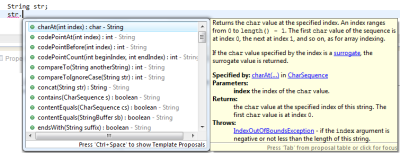

Строка — это упорядоченная последовательность символов. В Java строка является основным носителем текстовой информации. Для работы со строками здесь используются следующие классы: String, StringBuilder, StringBuffer. В этом уроке речь пойдет о классе String, его на первых порах будет вполне достаточно.
В данном уроке рассматривается:
В уроке 6 уже упоминалась работа со строками, а именно, как создавать строку. Также частично со строками мы встречались в предыдущих уроках. В этом и следующих двух уроках мы углубим знания о строках. В этом уроке будут рассмотрены создание строк в Java и наиболее популярные методы при работе со строками. Следующий урок будет посвящен форматированию строк. И еще один урок будет на тему работы с регулярными выражениями в Java, поскольку регулярные выражения достаточно мощный и нужный инструмент при работе со строками.
Но начнем с самого начала.
Строка в Java является объектом, поэтому ее можно создать, как и любой другой объект, при помощи оператора new.
String str1 = new String("Строка созданная при помощи оператора new");
Также строку можно создать при помощи литерала (фразы заключенной в кавычки) следующим образом.
String str2 = "Эта строка создана при помощи литерала.";
Обе строки, независимо от способа создания являются объектами — экземплярами класса String.
Важный момент: создание объектов при помощи литерала возможно только в классе String. Объекты любого другого класса при помощи литерала создать нельзя.
Можно также создать массив строк. Например, так:
String[] auto = {"Маша", "Петя", "Вася", "Коля"};
Подробнее о массивах и их создании написано в уроке 10 .
Конкатенация или слияние строк в Java
Для того, чтобы объединить несколько разных строк в одну, в Java можно использовать перегруженные (специально для объектов String) операторы «+» и «=+».
Еще один важный момент: операторы «+» и «=+», перегруженные для String, являются единственными перегруженными операторами в Java. Программист здесь не имеет возможности самостоятельно перегружать какие-либо операторы (как, например, в С++ и некоторых других языках).
Пример 1:
String str1 = "Мама ";
String str2 = "мыла ";
String str3 = "раму";
String result = str1 + str2 + str3;
System.out.print(result);
На консоль будет выведено «Мама мыла раму»
Пример 2:
String[] animals = {"Хаски","Морж"};// массив строк 1
String[] food = {"колбаски","корж"}; // массив строк 2
//составляем строки из элементов массивов и связующего слова
String result1 = animals[0] + " ест " + food[0];
String result2 = animals[1] + " ест " + food[1];
//выводим на консоль
System.out.println(result1);
System.out.println(result2);
Пример 3:
String[] auto = {"Волга", "Чайка", "Жигули"}; //задан массив строк
String result = "В гараже стоят машины: "; //задана строка
//прибавляем к строке элементы массива
for(int i = 0; i < auto.length; i++){
//если элемент не последний, разделяем запятой
if(i != auto.length-1 )
result += auto[i] + ", ";
//если последний, ставим после него точку
else
result += auto[i] + ".";
}
//выводим результат
System.out.print(result);
Наиболее употребительные методы класса String
При использовании IDE можно легко увидеть, какие методы есть у класса и получить подсказку по их использованию. На примере IDE Eclipse: для того, чтобы открыть список методов и быстро выбрать подходящий, нужно после имени переменной поставить точку и нажать комбинацию клавиш CTRL + Space (пробел). После этого появится окно, как на рисунке 14.1, где будут перечислены все доступные методы класса.

Рис. 14.1
При выборе метода из этого списка, справа (или слева) появится желтое окно с подсказкой по его использованию. При помощи нажатия Enter или двойного клика мыши метод можно вставить в ваш код, не прибегая к ручному набору.
Также после имени переменной и точки можно начать набирать вручную имя метода и после введения нескольких первых букв нажать CTRL + Space (пробел). При этом, если метод, начинающийся на эти буквы один, то он автоматически подставится в код, если методов несколько, то откроется окно, как на рисунке 14.1, где будут перечислены только те методы, которые начинаются с этих введенных вами букв.
Это было лирическое отступление о том, как облегчить себе жизнь. Далее рассмотрим методы, которые чаще всего используются при работе со строками. Некоторые задачи можно решить и без применения этих методов, но их знание значительно облегчает процесс программирования. В дальнейшем описании, первое слово, которое стоит перед названием метода — тип значения, которое возникнет в результате работы метода (значение, которое метод возвращает).
String concat(String str) — производит ту же конкатенацию, что была описана выше, но использование этого метода из класса String положительно влияет на производительность и скорость программы. На небольших примерах это незаметно и не существенно, но в более серьезных приложениях стоит использовать этот метод. Результатом работы метода будет строка. Параметр, который нужно передавать в метод для конкатенации — тоже строка, о чем нам говорит значение в скобках (String str).
Перепишем пример 2, при помощи concat():
String[] animals = {"Хаски","Морж"};// массив строк 1
String[] food = {"колбаски","корж"}; // массив строк 2
//составляем строки из элементов массивов и связующего слова
String result1 = animals[0].concat(" ест ").concat(food[0]);
String result2 = animals[1].concat(" ест ").concat(food[1]);
//выводим на консоль
System.out.println(result1);
System.out.println(result2);
Определение количества символов в строке
Для того чтобы определить количество символов в строке, используется метод length.
int length() — возвращает длину строки. Длина равна количеству символов Unicode в строке.
Пример 4:
String str = "Строка из букв, цифр 492 и специальных символов %*;№?";
int length = str.length();
System.out.println("Длина строки = " + length);
Если нам требуется узнать, какой символ находиться в строке на конкретной позиции, можем использовать метод charAt.
char charAt(int index) — возвращает символ, находящийся по указанному индексу в строке. Результатом работы метода будет символ типа char. Параметр, который передается в метод — целое число. Первый символ в строке, подобно массивам, имеет индекс 0.
Пример 5: определить последний символ в строке.
String str = "Последний символ в этой строке - о";
int last = str.length()-1;//длина строки - 1, так как отсчет начинается с 0
char ch = str.charAt(last);
System.out.println(ch);
Если мы хотим работать со строкой, как с массивом символов, можем конвертировать строку в массив при помощи метода toCharArray.
char[] toCharArray() — преобразует строку в новый массив символов.
Пример 6: поменять в строке символы пробела на точки при помощи преобразования в массив символов (для этой задачи есть более простое решение, нежели преобразование в массив, но об этом чуть позже).
Примечание: в данном случае мы не сможем использовать метод charAt. При помощи этого метода мы бы смогли только найти пробелы в строке, но не поменять их.
String str = "1 000 000 000";
//преобразовываем строку в массив
char[] chArray = str.toCharArray();
//перебираем все элементы массива
for(int i = 0; i<chArray.length; i++){
//находим пробел
if(chArray[i] == ' '){
//заменяем на точку
chArray[i] = '.';
}
}
//выводим результат
System.out.println(chArray);
Извлечение подстроки из строки
String substring(int beginIndex, int endIndex) или substring(int beginIndex) — возвращает новую строку, которая является подстрокой используемой строки. В параметрах метода нужно указать индекс строки, с которого начинается подстрока и индекс, которым заканчивается. Также возможно указывать только начальный индекс. В этом случае будет возвращена подстрока от начального индекса и до конца строки.
Пример 7.
String s = "www.mysite.com";
String name = s.substring(4, s.length()-4);
System.out.println(name); // на консоль выведет "mysite"
String domain = s.substring(4);
System.out.println(domain); // на консоль выведет "mysite.com"
Для разбиения строк на части используется метод String[] split(String regex), который разбивает строку на основании заданного регулярного выражения. О регулярных выражениях поговорим в одном из следующих уроков. Здесь покажем пример простого разбиения строки заданного одним символом.
Пример 8.
String isbn = "978-3-16-148410-0";
String[] isbnParts = isbn.split("-");
System.out.println("префикс EAN.UCC: " + isbnParts[0]);
System.out.println("номер регистрационной группы: " + isbnParts[1]);
System.out.println("номер регистранта: " + isbnParts[2]);
System.out.println("номер издания: " + isbnParts[3]);
System.out.println("контрольная цифра: " + isbnParts[4]);
boolean contains(CharSequence s) — проверяет, содержит ли строка заданную последовательность символов и возвращает true или false.
Пример 9.
String s = "www.mysite.com";
boolean isContain1 = s.contains("mysite");
System.out.println(isContain1);// нашел - выведет true
boolean isContain2 = s.contains("mysite.ru");
System.out.println(isContain2);// не нашел - выведет false
boolean endsWith(String suffix) — проверяет завершается ли строка определенными символами и возвращает true или false.
Пример 10.
String s = "www.mysite.com";
//проверяем заканчивается ли строка суффиксом "com"
boolean isComEnding = s.endsWith("com");
System.out.println(isComEnding);//выведет true
//проверяем заканчивается ли строка суффиксом "ru"
boolean isRuEnding = s.contains("ru");
System.out.println(isRuEnding);//выведет false
boolean startsWith(String prefix) или startsWith(String prefix, int toffset) — проверяет, начинается ли строка с определенных символов. Во втором случае можно указать позицию с которой необходимо начать поиск префикса.
Пример 11.
String s = "www.mysite.com";
//Проверяем, начинается ли адрес с www
boolean isWWW = s.startsWith("www");
if(isWWW){
/* Eсли да, проверяем начинается ли имя сайта
с "my". Поскольку адрес начинается с www
проверку начинаем с 4 символа*/
boolean isNameStarts = s.startsWith("my", 4);
}else{
/* Eсли нет, проверяем начинается ли имя сайта
с "my". Поскольку адрес не начинается с www
проверку производим с начала строки*/
boolean isNameStarts = s.startsWith("my");
}
int indexOf(int ch), indexOf(int ch, int fromIndex), indexOf(String str), indexOf(String str, int fromIndex) — метод indexOf применяется для поиска первого вхождения указанного символа в строке или первого вхождения указанной подстроки. Поиск также можно произвести с указанием позиции в строке от которой нужно начинать искать. Для поиска нужно указать соответствующие параметры. Метод возвращает число соответствующее индексу первого вхождения символа или подстроки. В случае отсутствия указанного символа или подстроки в строке, будет возвращена -1.
Пример 12
String data = "name:Igor\nsurname:Kolashnikov\nage:14\ntime:14:55";
//разбиваем строку на несколько подстрок на основании
// встречаемого символа новой строки
String[]lines=data.split("\n");
//проходим каждую подстроку
for (String line : lines){
//находим индекс первого вхождения символа ":" в подстроке
int pos = line.indexOf(":");
//вычленяем имя атрибута из подстроки
String attributeName= line.substring(0,pos);
//вычленяем значение атрибута
String value = line.substring(pos+1,line.length());
//вывод на экран вычлененных значений в нужном нам формате.
System.out.println(attributeName + " - " + value);
}
int lastIndexOf(int ch), lastIndexOf(int ch, int fromIndex), lastIndexOf(String str), lastIndexOf(String str, int fromIndex) — аналогично предыдущему случаю, только ищется последнее вхождение символа или подстроки в строке.
Модификация строк не является модификацией как таковой. Дело в том, что объекты класса String после создания уже нельзя изменять. Но можно создать копию строки с изменениями. Именно это и делают следующие методы.
toLowerCase() — преобразовать строку в нижний регистр;
toUpperCase() — преобразовать строку в верхний регистр;
trim() — отсечь на концах строки пустые символы;
Пример 13
String str = " Я помню ЧУДНОЕ мгновенье ";
//убрали символы пробела в начале и конце строки
str = str.trim();
//я помню чудное мгновенье
System.out.println(str.toLowerCase());
//Я ПОМНЮ ЧУДНОЕ МГНОВЕНЬЕ
System.out.println(str.toUpperCase());
String replace(char oldChar, char newChar), replace(CharSequence target, CharSequence replacement) — замена в строке одного символа или подстроки на другой символ или подстроку.
Вспомним пример 6, где нужно было поменять в строке символы пробела на точки и перепишем его с использованием replace:
String str = "1 000 000 000";
String newStr = str.replace(" ", ".");
System.out.println(newStr);
boolean equals(Object anObject) — проверяет идентичность строк. Возвращает true только в том случае, если в строках представлена одинаковая последовательность символов одной величены.
Пример 14
String str = "Я помню ЧУДНОЕ мгновенье";
String str2 = "я помню чудное мгновенье";
//строки не идентичны
System.out.println(str.equals(str2)); //false
//строки идентичны после перевода первой строки
//в нижний регистр
System.out.println(str.toLowerCase().equals(str2)); // true
int compareTo(String anotherString) — так же проверяет идентичность строк, однако, в отличии от метода equals возвращает:
Данный метод предназначен для упорядочивания строк. Он позволяет сравнить строки между собой и определить предшествующую строку. Для того, чтобы реализовать такое сравнение метод сравнивает числовые значения букв.
Рассмотрим пример с именами «Маша» и «Миша». При сравнении этих двух имен (пример 15), метод compareTo укажет, что имя «Маша» предшествует имени «Миша» (выдав отрицательное число) или наоборот, «Миша» следует за «Маша» (выдав положительное число). При упорядочивании имен по алфавиту мы бы упорядочили эти имена именно так. Метод в данном случае определяет, что числовое значение буквы «а» в «Маша» меньше, чем числовое значение «и» в Миша.
Пример 15
String name1 = "Маша";
String name2 = "Миша";
System.out.println(name1.compareTo(name2)); //-8
System.out.println(name2.compareTo(name1)); //8
Однако, в случае, если мы напишем «маша» с маленькой буквы и попробуем сравнить с «Миша», то получим положительное число.
System.out.println("маша".compareTo("Миша")); //32
То есть в данном случае имя «Миша» предшествует имени «маша». Это происходит потому, что в таблице символов Юникода буквы верхнего регистра предшествуют нижнему.
Для сравнения строк без учета регистра символов используется функция int compareToIgnoreCase(String str)
System.out.println("маша".compareToIgnoreCase("Миша")); //-8
Как мы видим, при сравнивании «маша» с «Миша» мы снова получаем отрицательное значение, то есть «маша» предшествует имени «Миша».
На этом закончим знакомство с методами класса String. Это далеко не все методы. Все методы класса String и их описание можно найти в официальной документации http://docs.oracle.com/javase/8/docs/api/java/lang/String.html#method.summary
Категория: Уроки Java
« Урок J-13. Арифметические операторы и математика в Java.
Урок J-15. Форматирование чисел и текста в Java. »
Комментарии и пинги к записи запрещены.